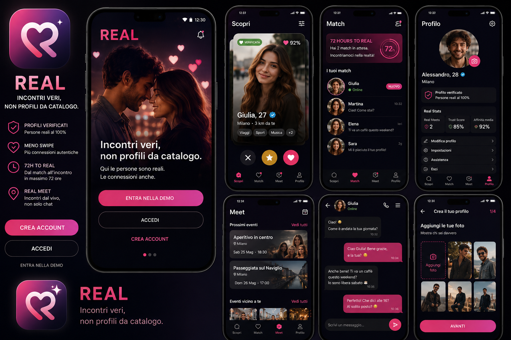

✓
Profili verificati
Telefono, REAL Presence e controlli progressivi per aumentare la fiducia tra persone reali.
REAL • IL DATING CHE PUNTA ALLA VITA REALE
REAL nasce con un obiettivo semplice: non tenerti dentro un'app, ma aiutarti ad arrivare a una conversazione autentica e, quando c'è reciprocità, a un incontro reale.
PERCHÉ REAL
La differenza non è un singolo pulsante: è il percorso completo. REAL prova a ridurre profili falsi, match dimenticati e conversazioni infinite senza una direzione.
Telefono, REAL Presence e controlli progressivi per aumentare la fiducia tra persone reali.
Interessi ricevuti e inviati sono chiari. Sai chi stai aspettando e puoi decidere consapevolmente.
Un invito a trasformare il match in qualcosa di concreto. Alla scadenza il match non viene cancellato.
La chat non è il traguardo. Promise, data, attività e luogo aiutano a passare dall'online al vivo.
Una scelta speciale, rara e personale: racconti cosa ti ha colpito e puoi aggiungere una breve REAL Voice.
Eventi, storie, guida e sicurezza per creare occasioni reali anche oltre il classico match uno-a-uno.
COME FUNZIONA
Foto, bio, città e interessi: abbastanza per raccontarti, senza trasformarti in una scheda prodotto.
Telefono + REAL Presence. Le funzioni più sensibili richiedono verifiche aggiuntive.
Puoi mostrare interesse, usare REAL Spark o passare oltre. Nessun meccanismo premium per vedere chi ti ha scelto.
Quando l'interesse è reciproco si apre la chat e parte il percorso 72 HOURS TO REAL.
Quando la conversazione ha senso, uno dei due può proporre di trasformarla in un'intenzione concreta.
Prima dei passaggi importanti confermi di essere presente. Poi scegliete attività, luogo e momento dell'incontro.
DENTRO REAL
L'interfaccia è pensata per rendere evidente cosa sta succedendo: chi hai scelto, chi ti ha scelto, quando nasce un match e quali passi portano verso un incontro reale.

SICUREZZA E CONTROLLO
Le verifiche servono ad alzare la qualità dell'ambiente, non a sostituire il giudizio personale. Puoi rifiutare un interesse, rimuovere un match, interrompere una conversazione e usare la guida di sicurezza prima di un incontro.
DISPONIBILE PRESTO
La fase iniziale sarà dedicata a un gruppo ristretto di beta tester. Il progetto verrà validato sul campo prima del rilascio pubblico.
BETA TEST
Stiamo preparando il primo gruppo di tester. Lasceremo qui il link ufficiale per richiedere l'accesso non appena la beta sarà pronta.